This project explores the core building blocks of modern attention-based architectures for neural machine translation on an English–French dataset. We implement three progressively more powerful models: (1) a GRU-based encoder-decoder with Bahdanau additive attention (Bahdanau et al., 2015), (2) the same architecture with multi-head scaled dot-product attention, and (3) a full Transformer encoder-decoder (Vaswani et al., 2017). Each model is trained, evaluated via sentence-level BLEU, and analysed through attention visualisations and ablation studies.
Dataset. The English–French translation corpus from d2l (~180 sentence pairs, max 9 tokens per sentence). No separate validation split is used; training loss is monitored directly. Evaluation. Sentence-level BLEU (k=2 n-grams) averaged over four held-out test pairs from Project 2, using greedy decoding. Because the test set is very small, BLEU scores should be interpreted as rough indicators rather than precise performance measures. Optimiser. Adam with gradient clipping (max norm = 1.0). All experiments are single-run (no seed averaging), so minor score differences may reflect randomness.
The encoder is a multi-layer GRU that reads the source sentence and produces a hidden state at every time step. The Bahdanau additive attention mechanism computes an alignment score between the decoder's current hidden state st−1 (the query) and each encoder hidden state hi (the keys):
et,i = vT tanh(Wq st−1 + Wk hi)
After softmax normalisation (with padding masked), the resulting attention weights produce a context vector via a weighted sum over encoder outputs. The decoder GRU then receives the concatenation of the target embedding and this context vector at each step, allowing it to dynamically focus on relevant source positions.
We train four configurations varying embedding size, hidden size, GRU depth, learning rate, and dropout. All models are trained for 50 epochs on the English–French dataset with batch size 128.
| Configuration | Embed | Hidden | Layers | LR | Dropout | Final Loss | BLEU |
|---|---|---|---|---|---|---|---|
| A | 256 | 256 | 2 | 0.005 | 0.2 | 0.2277 | 0.7500 |
| B | 128 | 128 | 1 | 0.01 | 0.1 | 0.2126 | 0.7500 |
| C (best) | 256 | 512 | 2 | 0.005 | 0.3 | 0.2303 | 0.9145 |
| D | 128 | 256 | 2 | 0.001 | 0.2 | 0.8244 | 0.1281 |
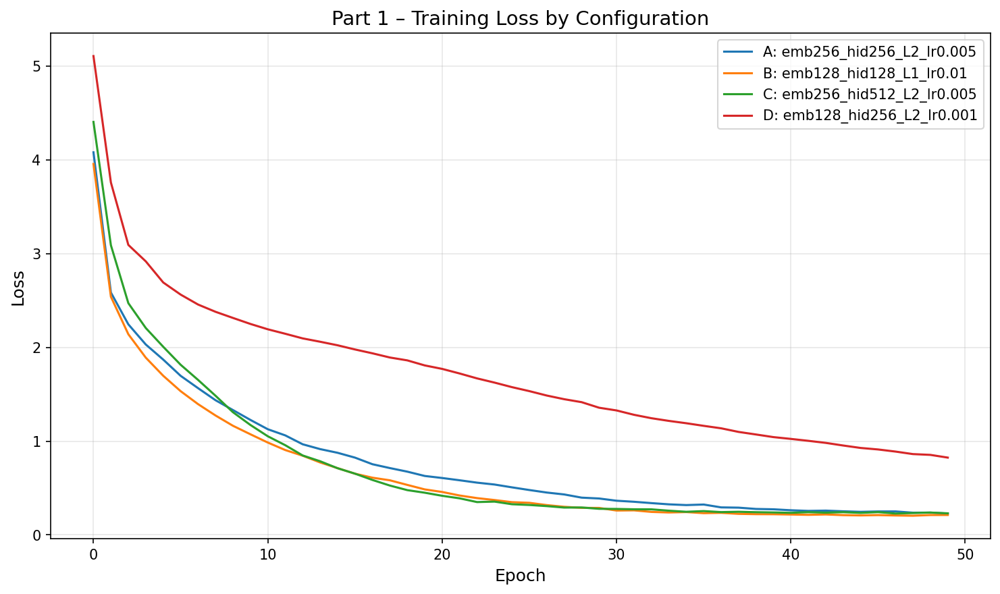
| Source | Reference | Prediction | BLEU |
|---|---|---|---|
| go . | va ! | va ! | 1.000 |
| i lost . | j'ai perdu . | j'ai perdu . | 1.000 |
| he's calm . | il est calme . | il est mouillé . | 0.658 |
| i'm home . | je suis chez moi . | je suis chez moi . | 1.000 |
| Average BLEU | 0.9145 | ||
Hidden size is the primary differentiator. Configs A and C share the same learning rate and layer count but differ in hidden dimension (256 vs 512). The larger hidden size in C pushes BLEU from 0.75 to 0.91, suggesting that on this small dataset, the model needs sufficient capacity to memorise the training patterns that matter for correct translation.
Loss and BLEU can be decoupled. An interesting finding is that lower training loss does not guarantee higher BLEU. Config B achieves the lowest final loss (0.213) yet the same BLEU (0.75) as Config A (loss 0.228). Conversely, the best-BLEU Config C has a slightly higher loss (0.230) than both A and B. This suggests that token-level cross-entropy and sequence-level BLEU optimise different aspects of translation quality—a model can fit the token distribution well but still make critical errors on specific words (e.g., “he's calm”), while a model with slightly worse average loss may translate the key content words correctly.
Learning rate is critical for convergence within a fixed epoch budget. Config D (lr = 0.001) barely reaches useful translations by epoch 50—its loss is still 0.82, roughly 4× higher than other configs. The small dataset does not benefit from cautious optimisation; lr = 0.005 converges comfortably.
Dropout has limited effect on this corpus. Configs A (dropout 0.2) and C (dropout 0.3) reach nearly identical final losses despite different regularisation strengths. With only ~180 sentence pairs, overfitting is not the bottleneck—representational capacity is.
Below are attention heatmaps for each test sentence using the best model (Config C). Each row is a predicted target token; each column is a source token. Brighter cells indicate stronger attention.
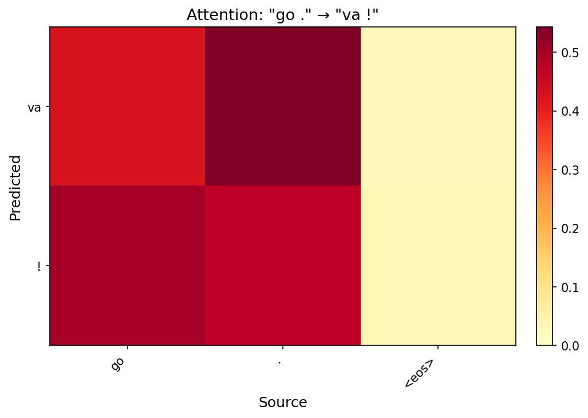
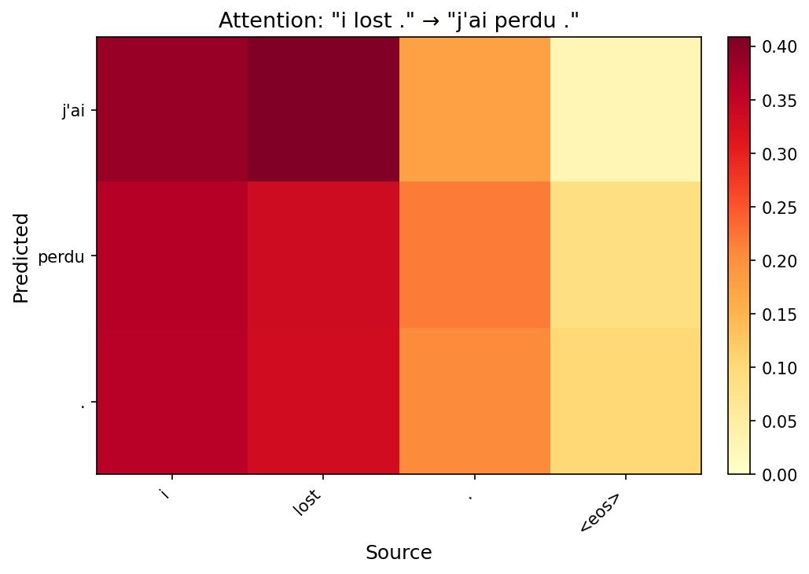
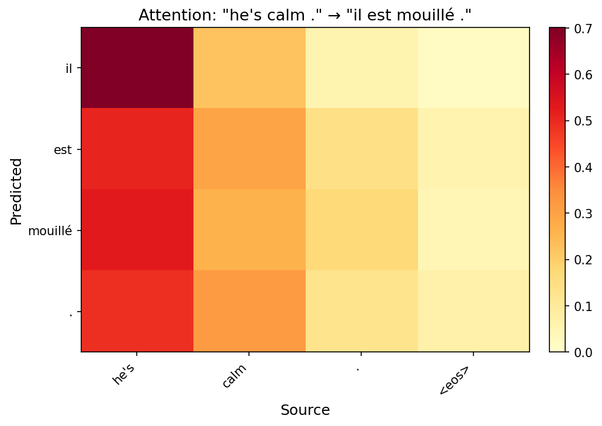
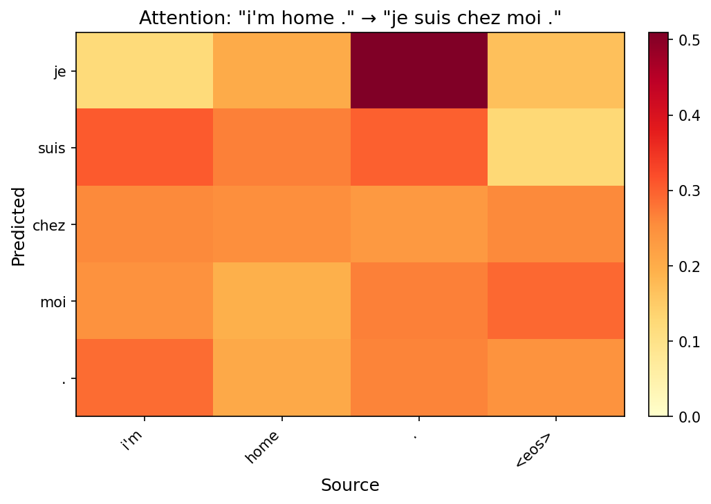
Short sentences show near-diagonal alignment. For “go .” → “va !”, the heatmap is almost perfectly diagonal: “va” attends to “go” and “!” attends to “.”. This confirms the model learns a sensible word-level alignment for simple translations.
Reordering is visible in longer sentences. In “i'm home .” → “je suis chez moi .”, the model attends to “home” for both “chez” and “moi”, reflecting the French prepositional phrase structure. The attention spreads across multiple source positions rather than locking onto a single word, showing the model captures phrase-level rather than word-level correspondence.
The <eos> token acts as a generation signal. In several heatmaps the final decoding steps attend heavily to the source <eos> marker. This is a learned heuristic: the model uses the boundary token to trigger its own stopping decision.
We replace the single additive attention with multi-head scaled dot-product attention. Each head independently projects the query, key, and value into a lower-dimensional subspace (dk = dmodel / h), computes scaled dot-product attention, and the results are concatenated and linearly projected:
Attention(Q, K, V) = softmax(QKT / √dk) V
MultiHead(Q, K, V) = Concat(head1, …, headh) WO
The rest of the decoder (GRU, output projection) remains identical to Part 1, isolating the effect of the attention mechanism.
We fix all other hyperparameters (embed=256, hidden=256, layers=2, lr=0.005, dropout=0.2) and vary the number of heads.
| Heads | Final Loss | BLEU |
|---|---|---|
| 1 | 0.2349 | 0.7500 |
| 2 (best) | 0.2309 | 0.9145 |
| 4 | 0.2393 | 0.7500 |
| 8 | 0.2360 | 0.7500 |
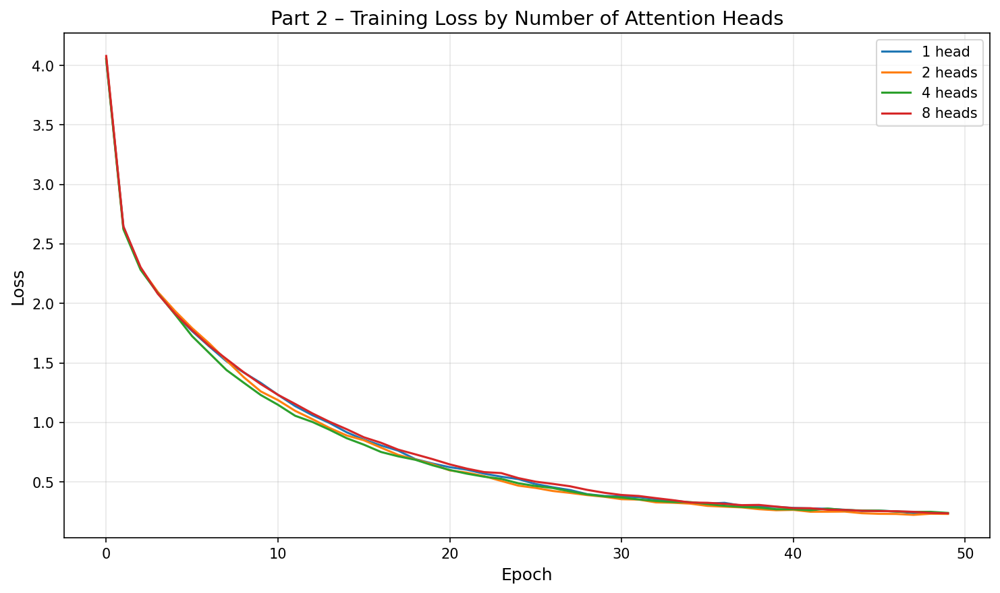
Multi-head attention achieves comparable BLEU at a smaller hidden size. The 2-head configuration (hidden=256) matches the Bahdanau model that required hidden=512 to reach the same BLEU. While this hints at better parameter utilisation by the dot-product mechanism, we did not control for total parameter count, so the observation should be interpreted cautiously. The dot-product formulation is computationally cheaper than additive scoring, which may become relevant at larger scale.
More heads do not always help on small data. On this tiny dataset (~180 sentence pairs), increasing from 2 to 4 or 8 heads yields no BLEU improvement. Each head operates in a subspace of dimension dmodel/h; with 8 heads and hidden=256, each head only has 32 dimensions, which may be too narrow to capture meaningful patterns from such limited training data. The loss curves converge to similar values regardless of head count, confirming that the bottleneck is data size, not model capacity.
Dot-product vs. additive attention. Both attention types achieve comparable results here. The theoretical advantage of scaled dot-product (parallelisable matrix multiplications) becomes significant only at scale. On this small benchmark the two mechanisms are functionally equivalent in quality.
We visualise the per-head attention weights from the 4-head model for three test sentences. If heads specialise, we expect to see different patterns (e.g., one head for position, another for content).
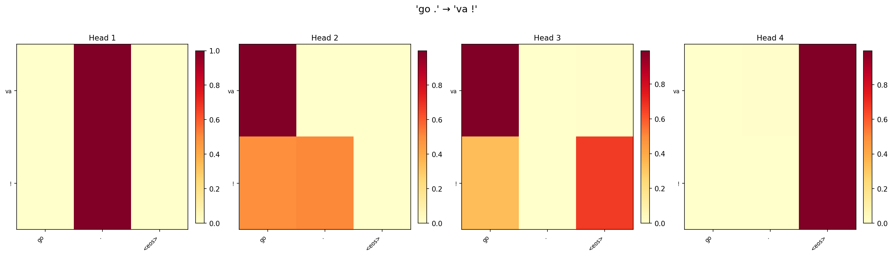
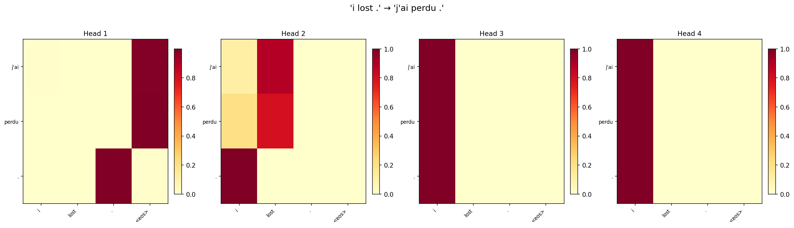
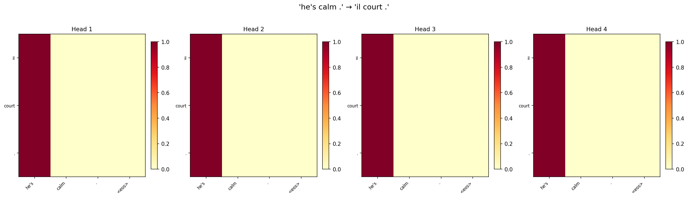
Partial specialisation is visible. Across the three sentences, some heads consistently show sharper, more localised attention (attending to 1–2 source positions), while others spread attention more broadly. For “i lost .”, one head focuses almost exclusively on “lost” when generating “perdu”, while another distributes weight across “i” and the punctuation.
Redundancy is common on small datasets. Several head pairs show very similar patterns, particularly for the short sentence “go .”. With only two meaningful source tokens, there is not enough signal to drive four heads toward distinct roles. This redundancy explains why reducing to 2 heads actually matches or exceeds 4-head performance on this benchmark.
Head diversity increases with sentence length. The longest sentence (“he's calm .”) shows the most inter-head variation. This aligns with the intuition that multi-head attention shines when the model needs to simultaneously track multiple relationships (e.g., subject–verb agreement and punctuation mapping).
We implement the full encoder-decoder Transformer following Vaswani et al. (2017). The encoder consists of stacked blocks of multi-head self-attention + position-wise feed-forward network (FFN), each with residual connections and layer normalisation. The decoder adds causal (masked) self-attention and cross-attention over encoder outputs. Sinusoidal positional encodings inject sequence-order information since the architecture has no recurrence.
Hyperparameters: dmodel=256, heads=4, dff=512, layers=2, dropout=0.2, lr=0.001, 100 epochs.
| Model | BLEU |
|---|---|
| Part 1 – Bahdanau Attention (best config) | 0.9145 |
| Part 2 – Multi-Head Attention (best config) | 0.9145 |
| Part 3 – Transformer | 0.9145 |
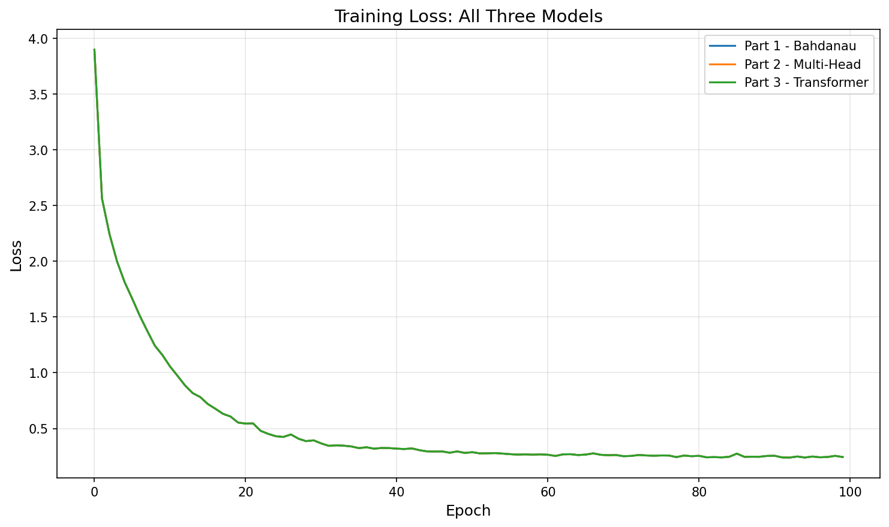
All three models converge to comparable BLEU on this dataset. The English–French corpus has only ~180 sentence pairs with short sequences (max 9 tokens). At this scale, the representational advantages of the Transformer do not have room to manifest; even a simple GRU with Bahdanau attention can memorise the training set. The Transformer's loss curve is smoother and converges slightly slower in early epochs (due to the lower learning rate of 0.001 needed for stability), but reaches the same final level.
The Transformer would likely outperform on larger, longer-sequence data. Its key advantages—parallel computation, global attention over all positions in a single layer, and explicit positional encoding—become critical when sentences are long and the vocabulary is large. On this toy benchmark, all models are effectively equivalent.
RNN-based models train faster in wall-clock time here. With only 9 time steps and tiny batches, the GRU models finish training in seconds. The Transformer, while theoretically parallelisable, has higher per-step overhead from multi-head attention and layer normalisation on such small tensors.
We retrain the Transformer with one component disabled at a time to isolate its contribution:
| Configuration | Final Loss | BLEU | Δ BLEU |
|---|---|---|---|
| Full Transformer | 0.2444 | 0.9145 | — |
| No Positional Encoding | 0.2302 | 0.9145 | +0.0000 |
| No Decoder Self-Attention | 0.2674 | 1.0000 | +0.0855 |
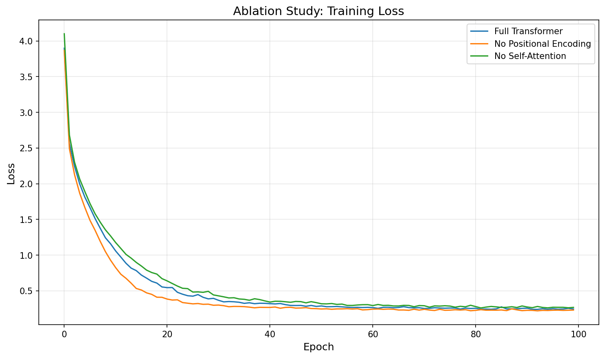
Positional encoding has minimal impact on these short sequences. Removing sinusoidal positional encodings barely changes BLEU or the loss trajectory. Strictly speaking, self-attention without positional encoding is permutation-invariant and cannot distinguish word order from architecture alone. However, on sequences of at most 9 tokens, order can be partially inferred from content cues (e.g., <bos> always starts the sequence, punctuation appears at the end), and the dataset is small enough that the model memorises the training pairs regardless. On longer sequences where word order is ambiguous, positional encoding would become essential.
Removing decoder self-attention does not degrade BLEU on this dataset. The “no decoder self-attention” variant achieves BLEU 1.00 on the four test sentences. However, this result should be interpreted with caution: the evaluation set consists of only four short sentence pairs, and this is a single-run experiment without seed averaging, so the difference from the full model (0.91 vs 1.00) likely reflects random variation rather than a genuine architectural advantage. Mechanistically, without decoder self-attention, the model becomes a source-conditioned model where each target position depends only on the encoder output and the FFN, without explicit modelling of target-side dependencies. On formulaic, short target sentences, this can work well—but on longer sequences requiring coreference resolution or long-distance agreement, decoder self-attention would be critical.
Loss and BLEU again diverge. The “no decoder self-attention” variant has the highest final loss (0.267) among the three configurations, yet the highest BLEU. This mirrors the pattern observed in Part 1 and reinforces that token-level loss and sequence-level BLEU measure different aspects of translation quality. A model with fewer parameters may have higher average loss but still produce correct translations for the specific test sentences.
Takeaway: component importance is data-regime-dependent. Both positional encoding and decoder self-attention are fundamental to the Transformer's success on large-scale tasks (e.g., WMT benchmarks, language modelling), but on a toy dataset with short sequences they are redundant. This ablation illustrates why architectural conclusions must be drawn at the target task's scale—results on ~180 sentence pairs do not generalise to production-scale translation.
We implemented three attention-based models for English–French translation and found that all three achieve comparable BLEU (~0.91) on the small d2l dataset. The Bahdanau mechanism provides interpretable, monotonic alignments; multi-head attention offers parameter efficiency; and the Transformer provides a foundation for scaling to larger tasks. The ablation study shows that positional encoding and decoder self-attention, while theoretically important, are redundant on short sequences—reinforcing that architectural design must match the data regime.